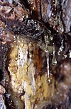

terpene

Definition: Terpenes () are a class of natural products consisting of compounds with the formula (C5H8)n for n ≥ 2. Comprising more than 30,000 compounds, these unsaturated hydrocarbons are produced predominantly by plants, particularly conifers. Terpenes are further classified by the number of carbons: monoterpenes (C10), sesquiterpenes (C15), diterpenes (C20), as examples. The terpene alpha-pinene, is a major component of the common solvent, turpentine.
Source: Wikipedia
Wikipedia Page
Wikidata Page